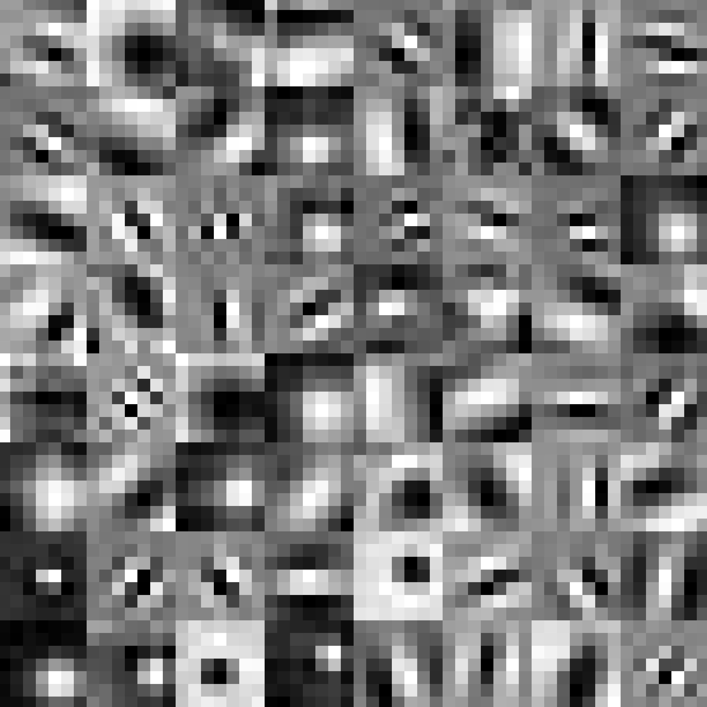
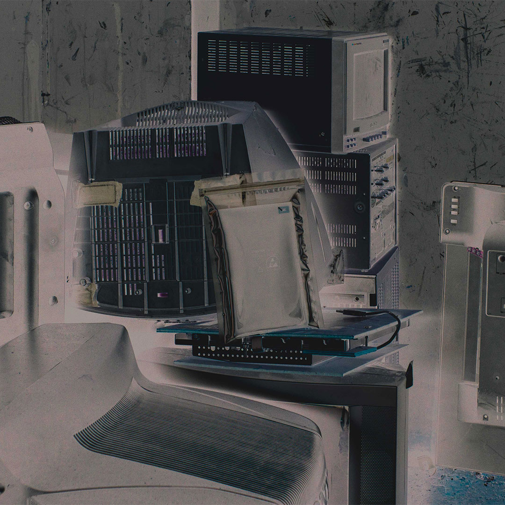

marius.09mueller(at)outlook(dot)de
Marius Müller (*2000, Karlsruhe, DE) is a writer and artist situated in Würzburg, GER. His work both practical and theoretical follows themes of remembrance, articifical neural networks, history and archival techniques. Currently working in a research institute for user interface and digital media practices, he aims to continue his studies of technology and memory in a postgraduate programme.
Chronology/CV

Die Nooautomaten ~ 2023
BibTeX Citation
@report{Mueller:2023,
author = {Mueller, Marius},
title = {Die Nooautomaten},
year = {2023},
publisher = {Technical University of Applied Sciences Würzburg-Schweinfurt},
address = {Würzburg, Germany}
}
---> Download PDF or ORDER

Es ist alles eitel. ~ 2021
BibTeX Citation
@report{Mueller:2021,
author = {Mueller, Marius},
title = {Es ist alles eitel.},
year = {2021},
publisher = {Baden-Wuerttemberg Cooperative State University Ravensburg},
address = {Ravensburg, Germany}
}
---> Download PDF or ORDER